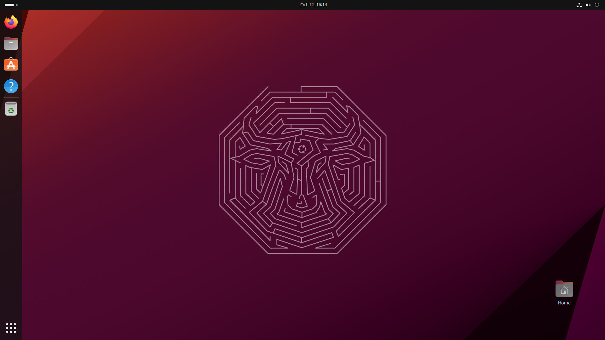

Ubuntu
Ubuntu es un sistema operativo de código abierto basado en Linux,
diseñado para ser fácil de usar y accesible para personas con diferentes niveles de experiencia
tecnológica. Desarrollado y mantenido por Canonical Ltd., Ubuntu se destaca por su enfoque en la
simplicidad, seguridad y estabilidad. Está disponible de manera gratuita y es utilizado tanto en
computadoras de escritorio como en servidores y otros dispositivos.
Al estar basado en Linux, Ubuntu ofrece un entorno altamente personalizable y seguro, siendo menos
vulnerable a virus y malware. Viene con una interfaz gráfica amigable (GNOME es la predeterminada), y su
ecosistema incluye una gran variedad de software y herramientas útiles para usuarios comunes,
desarrolladores y administradores de sistemas.
Además, es popular en la comunidad de desarrollo de software, ya que soporta múltiples lenguajes de
programación y plataformas.
Historia
Ubuntu fue lanzado por primera vez en 2004 por la empresa Canonical Ltd., cuyo fundador, Mark Shuttleworth, es un prendedor sudafricano. De hecho el nombre de este sistema, «ubuntu», significa «humanidad hacia los demás» en África. Ubuntu surgió como una bifurcación (derivado) Debian, una de las distribuciones de Linux más robustas y estables. A diferencia de Debian, que se enfocaba más en usuarios avanzados, Ubuntu fue diseñado para ser accesible para todos, incluidos los principiantes. Desde sus inicios, Ubuntu ha seguido un ciclo de lanzamientos regulares, con una versión estable cada seis meses y versiones de soporte a largo plazo (LTS) cada dos años, las cuales reciben actualizaciones de seguridad durante cinco años.
Características Principales
Código Abierto
Ubuntu es de código abierto, lo que significa que su código es público. Código abierto no siempre es sinónimo de gratuito, ya que no todas las distribuciones de Linux se pueden usar sin el pago de una licencia. En el caso de Ubuntu, sí se puede usar libremente en cualquiera de sus ediciones.
Comunidad Activa
Ubuntu es uno de los sistemas operativos con una comunidad más amplia. Además, sus usuarios son muy activos y amigables, dispuestos a ayudar a los usuarios ante cualquier situación. Esto es importante a la hora de escoger un sistema operativo, porque nos permitirá resolver fácilmente los problemas que puedan surgir. Por su parte, ya bajo pago, Canonical ofrece también soporte profesional y servicios de consultoría para empresas.
Seguridad y Estabilidad
Ubuntu es además conocido por su estabilidad y seguridad. Esto es un factor común en todos los sistemas basados en Linux, que son menos propensos a virus y malware que otros sistemas. Además, gracias a las actualizaciones de seguridad publicadas regularmente, podemos estar protegidos ante agujeros de seguridad tanto en el propio sistema como en las aplicaciones instaladas.
Comparativa de Sistemas Operativos
| Sistema Operativo | Ventajas | Desventajas |
|---|---|---|
| Ubuntu | Libre, seguro, personalizable | Compatibilidad limitada con ciertos programas |
| Windows | Amplia compatibilidad, facilidad de uso | Licencia costosa, vulnerabilidad a virus |
| macOS | Optimización de hardware, fácil de usar | Sistema cerrado, costoso |
Requerimientos del Sistema
Mínimos:
- Procesador: 2 GHz
- RAM: 4 GB
- Espacio en disco: 25 GB
- Tarjeta gráfica con soporte para gráficos 3D
Recomendados:
- Procesador: 2 GHz o superior
- RAM: 8 GB
- Espacio en disco: 50 GB
Video: Introducción a Ubuntu
Video: Instalar Ubuntu
Conclusiones
Poner Conclusiones
Recursos Relacionados
Nuestro Equipo
Uzziel Aparicio
Software Developer
Michael Aparicio
Software Developer
Richard Zhang
Software Developer
Javier Hernandez
Software Developer
Emily Perez
Software Developer
Información del Grupo
- Profesor: Isaac Esquivel
- Universidad: Universidad Tecnológica de Panamá
- Facultad: Ingeniería en Sistemas Computacionales
- Departamento: Programación
- Carrera: Lic. Desarrollo de Software
- Grupo: 1LS131